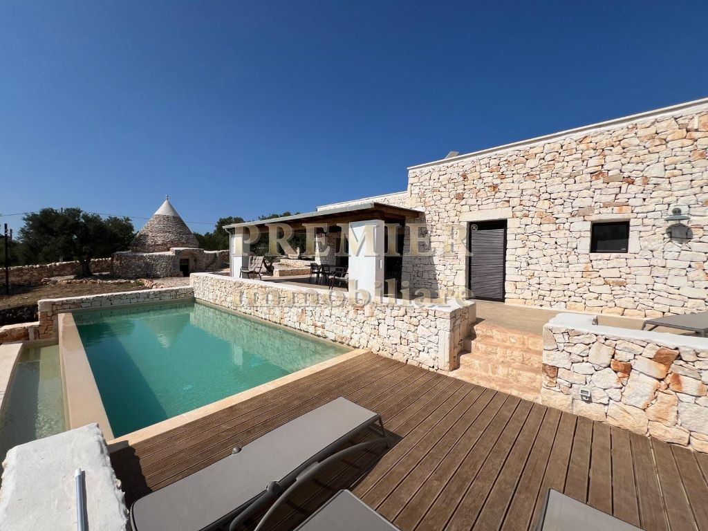

€670.000
Ostuni (C.da Barbagianni) · Puglia · Italy
Exact brief in the Ostuni olive plain: dry-stacked exposed stone villa paired with a conical trullo dependance around a built private infinity pool on ~7.000 m² fenced land — old mixed with new, not a fixer or project.
Opened 22 Sep 2026 on Premier Immobiliare; asking €670.000; Rif. 11448; IN VENDITA; 3 bed / 3 bath; land ~7.000 m²; hero confirms private pool + exposed stone + trullo.
Open listing